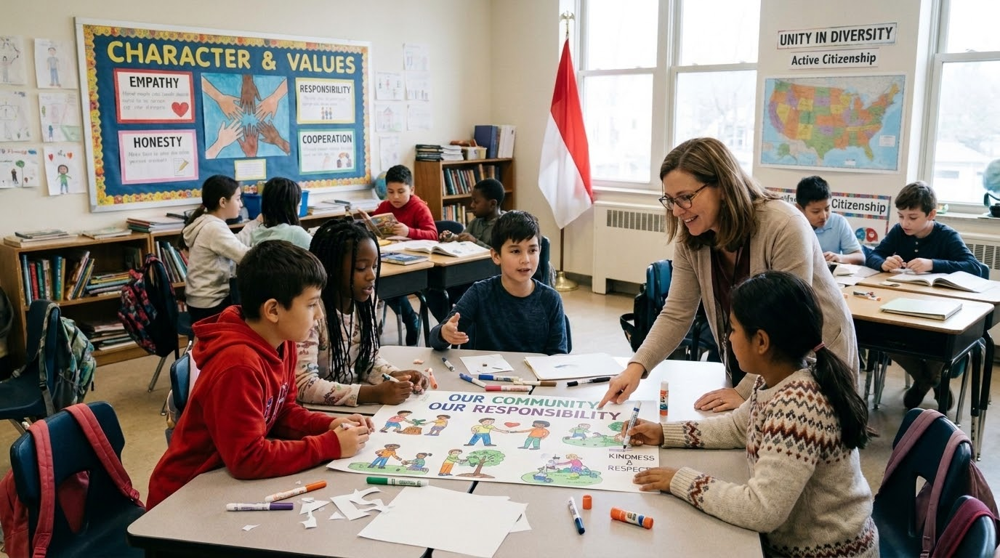

PENDIDIKAN MORAL DAN KARAKTER KEBANGSAAN

Pendahuluan
Pendidikan moral dan karakter kebangsaan merupakan bagian mendasar dalam membangun kehidupan bangsa yang bermartabat. Kemajuan suatu bangsa tidak hanya ditentukan oleh pertumbuhan ekonomi, perkembangan ilmu pengetahuan, penguasaan teknologi, maupun kekuatan politik dan pemerintahan, tetapi juga oleh kualitas moral manusia yang menjalankan kehidupan di dalamnya. Bangsa yang memiliki sumber daya alam melimpah dan kemampuan teknologi tinggi belum tentu mampu mencapai kehidupan yang adil dan sejahtera apabila masyarakatnya kehilangan kesadaran moral, tanggung jawab, kejujuran, dan kepedulian terhadap kepentingan bersama.
Pendidikan moral memiliki kedudukan penting karena berhubungan langsung dengan pembentukan pemahaman manusia mengenai baik dan buruk, benar dan salah, serta tanggung jawab terhadap tindakan yang dilakukan. Moralitas tidak cukup dipahami sebagai seperangkat aturan yang harus ditaati, melainkan harus tumbuh menjadi kesadaran yang mempengaruhi cara manusia berpikir, menentukan sikap, mengambil keputusan, dan bertindak dalam kehidupan sehari-hari.
Sementara itu, karakter kebangsaan merupakan kepribadian yang mencerminkan nilai-nilai luhur kehidupan berbangsa dan bernegara. Karakter tersebut terlihat melalui sikap menghargai perbedaan, menjunjung persatuan, menghormati hak orang lain, mengutamakan keadilan, menjaga kejujuran, serta memiliki tanggung jawab terhadap masa depan bangsa. Karakter kebangsaan bukan sekadar kebanggaan terhadap identitas nasional, melainkan kesediaan untuk menjalankan nilai-nilai kebangsaan dalam kehidupan nyata.
Oleh karena itu, pendidikan moral dan karakter kebangsaan perlu ditempatkan sebagai proses pembentukan manusia yang tidak hanya cerdas secara intelektual, tetapi juga matang dalam pertimbangan moral dan bertanggung jawab dalam kehidupan sosial, politik, dan kenegaraan.
1. Hakikat Pendidikan Moral dalam Pembentukan Manusia
Pendidikan moral pada hakikatnya merupakan proses membangun pemahaman dan kesadaran manusia mengenai nilai-nilai yang menjadi landasan perilaku. Melalui pendidikan moral, seseorang diarahkan untuk memahami bahwa setiap tindakan memiliki konsekuensi, baik terhadap dirinya sendiri maupun terhadap kehidupan orang lain.
Pendidikan moral tidak semestinya hanya berorientasi pada kemampuan menghafal norma, aturan, atau nasihat mengenai perilaku yang baik. Hal yang lebih penting adalah membentuk kesadaran agar manusia mampu memahami alasan mengapa suatu tindakan harus dilakukan atau dihindari. Dengan demikian, kebaikan tidak dijalankan semata-mata karena takut terhadap hukuman, melainkan karena adanya kesadaran mengenai tanggung jawab moral.
Manusia yang memiliki kesadaran moral akan mempertimbangkan kepentingan orang lain sebelum mengambil keputusan. Ia tidak menjadikan keuntungan pribadi sebagai satu-satunya ukuran dalam menentukan tindakan. Kejujuran, keadilan, kepedulian, dan tanggung jawab menjadi prinsip yang membimbing perilakunya.
Dalam kehidupan masyarakat, pendidikan moral juga membangun kemampuan untuk membedakan kepentingan pribadi dan kepentingan bersama. Setiap manusia memiliki hak untuk memperjuangkan kepentingannya, tetapi hak tersebut tidak dapat digunakan untuk mengabaikan hak orang lain. Kesadaran semacam ini merupakan dasar penting bagi terbentuknya kehidupan sosial yang tertib, saling menghormati, dan berkeadilan.
Dengan demikian, pendidikan moral bukan hanya membentuk perilaku individu, melainkan juga membangun kualitas hubungan sosial yang menjadi landasan kehidupan berbangsa dan bernegara.
2. Pendidikan Karakter sebagai Pembentukan Kepribadian
Pendidikan karakter merupakan proses pembentukan kepribadian melalui penanaman dan pembiasaan nilai-nilai yang baik. Karakter tidak terbentuk hanya melalui pengetahuan tentang kebaikan, tetapi juga melalui keteladanan, pengalaman, pembiasaan, dan konsistensi dalam menjalankan nilai-nilai tersebut.
Seseorang mungkin memahami pentingnya kejujuran, tetapi pemahaman tersebut belum tentu menjadikannya pribadi yang jujur. Kejujuran baru menjadi bagian dari karakter apabila diwujudkan secara konsisten dalam perkataan, tindakan, dan pengambilan keputusan, termasuk ketika tidak ada orang lain yang mengawasi.
Hal yang sama berlaku terhadap tanggung jawab, kedisiplinan, kesederhanaan, kepedulian, dan sikap menghormati sesama. Semua nilai tersebut membutuhkan proses pembentukan yang berkelanjutan sehingga tidak berhenti sebagai pengetahuan atau slogan.
Pendidikan karakter juga berkaitan dengan kemampuan mengendalikan diri. Manusia perlu memiliki pertimbangan yang matang agar tidak mudah dikuasai oleh keserakahan, kemarahan, kebencian, kesombongan, maupun dorongan untuk memperoleh keuntungan dengan mengorbankan orang lain.
Karakter yang baik tercermin dalam kesesuaian antara pemahaman, sikap, perkataan, dan tindakan. Ketika seseorang memiliki prinsip moral, ia akan berusaha mempertahankan prinsip tersebut dalam berbagai keadaan, bukan hanya ketika tindakan yang benar memberikan keuntungan bagi dirinya.
Oleh sebab itu, keberhasilan pendidikan karakter tidak cukup dinilai dari perilaku seseorang ketika berada di lingkungan pendidikan, tetapi juga dari bagaimana ia menjalankan tanggung jawab dalam keluarga, masyarakat, pekerjaan, dan kehidupan kenegaraan.
3. Karakter Kebangsaan sebagai Identitas Moral Bangsa
Karakter kebangsaan merupakan cerminan nilai-nilai yang membentuk kepribadian suatu bangsa. Dalam konteks Indonesia, karakter kebangsaan memiliki hubungan erat dengan Pancasila, Undang-Undang Dasar Negara Republik Indonesia Tahun 1945, semangat persatuan, penghormatan terhadap keberagaman, dan cita-cita kehidupan nasional.
Indonesia merupakan bangsa yang memiliki keragaman suku, budaya, bahasa, adat istiadat, dan latar belakang sosial. Keberagaman tersebut merupakan kenyataan kehidupan yang membutuhkan kesadaran untuk saling menghormati. Persatuan bangsa tidak berarti menghilangkan perbedaan, tetapi membangun kehidupan bersama dengan mengakui kedudukan setiap warga negara sebagai bagian dari bangsa Indonesia.
Karakter kebangsaan harus tercermin melalui sikap yang menghargai martabat manusia, mengutamakan kepentingan bersama, menolak diskriminasi, serta menjaga persatuan tanpa mengabaikan keadilan.
Nilai kebangsaan juga tidak boleh dipersempit menjadi simbol, upacara, atau ungkapan kecintaan terhadap tanah air. Semua itu dapat menjadi bagian dari ekspresi kebangsaan, tetapi substansinya terletak pada perilaku nyata. Seseorang yang mengaku mencintai bangsa seharusnya menunjukkan kepedulian terhadap masyarakat, menghormati hukum, menjaga fasilitas umum, serta tidak melakukan tindakan yang merugikan kepentingan negara.
Karakter kebangsaan juga menuntut keberanian untuk mengkritisi ketidakadilan dan penyimpangan. Kecintaan terhadap bangsa bukan berarti membenarkan seluruh tindakan penyelenggara negara. Justru kesadaran kebangsaan yang matang mendorong masyarakat untuk menjaga kehidupan negara agar tetap berjalan berdasarkan prinsip keadilan, kejujuran, dan tanggung jawab.
4. Keluarga, Sekolah, dan Masyarakat sebagai Lingkungan Pendidikan Moral
Pendidikan moral dan karakter kebangsaan tidak dapat dibebankan hanya kepada lembaga pendidikan formal. Pembentukan karakter membutuhkan keterlibatan keluarga, sekolah, masyarakat, dan lingkungan kehidupan yang lebih luas.
Keluarga merupakan lingkungan pertama tempat manusia mengenal nilai-nilai kehidupan. Melalui hubungan antaranggota keluarga, seorang anak belajar mengenai kejujuran, tanggung jawab, penghormatan, kepedulian, dan kedisiplinan. Keteladanan orang tua memiliki pengaruh besar karena anak tidak hanya belajar dari perkataan, tetapi juga memperhatikan perilaku yang diperlihatkan dalam kehidupan sehari-hari.
Sekolah memiliki tanggung jawab mengembangkan pendidikan moral melalui proses pembelajaran dan budaya pendidikan. Pengetahuan mengenai Pancasila, kewarganegaraan, sejarah bangsa, dan nilai-nilai kemanusiaan perlu dihubungkan dengan pengalaman nyata. Peserta didik harus mendapatkan ruang untuk mengembangkan kemampuan berpikir kritis, berdialog, menghargai perbedaan, serta menyelesaikan persoalan tanpa kekerasan.
Guru juga memiliki kedudukan penting sebagai teladan moral. Sikap adil, jujur, disiplin, dan menghargai peserta didik merupakan bagian dari pendidikan karakter yang tidak selalu dapat disampaikan melalui materi pelajaran.
Masyarakat menjadi lingkungan yang memperluas pengalaman pembentukan karakter. Kehidupan sosial memberikan kesempatan bagi manusia untuk belajar bekerja sama, menghormati hak orang lain, menjalankan tanggung jawab, dan menyelesaikan perbedaan.
Ketika keluarga mengajarkan kejujuran, sekolah menanamkan tanggung jawab, dan masyarakat memberikan keteladanan, pendidikan moral akan memperoleh landasan yang lebih kuat. Sebaliknya, apabila nilai-nilai yang diajarkan bertentangan dengan kenyataan perilaku di lingkungan kehidupan, pembentukan karakter akan menghadapi hambatan.
5. Pendidikan Moral dalam Menghadapi Perkembangan Zaman
Perkembangan teknologi informasi dan komunikasi membawa perubahan besar terhadap kehidupan masyarakat. Arus informasi yang semakin cepat memberikan kemudahan dalam memperoleh pengetahuan, tetapi juga menghadirkan berbagai persoalan moral.
Media sosial, misalnya, dapat menjadi sarana komunikasi dan pertukaran gagasan, tetapi juga dapat digunakan untuk menyebarkan fitnah, berita bohong, ujaran kebencian, penghinaan, dan provokasi. Tanpa kesadaran moral, kebebasan berekspresi dapat berubah menjadi tindakan yang merugikan orang lain.
Pendidikan moral pada era digital harus membangun tanggung jawab dalam menggunakan teknologi. Setiap orang perlu memahami bahwa tindakan di ruang digital tetap memiliki konsekuensi moral dan sosial. Kebebasan menyampaikan pendapat tidak berarti kebebasan untuk merendahkan martabat manusia atau menyebarkan informasi yang tidak dapat dipertanggungjawabkan.
Selain itu, pendidikan moral perlu membangun kemampuan berpikir kritis. Masyarakat harus mampu membedakan informasi yang benar dan salah, memahami kepentingan di balik suatu informasi, serta tidak mudah terpengaruh oleh provokasi.
Tantangan lainnya adalah berkembangnya sikap individualistis dan orientasi materialistis yang dapat melemahkan kepedulian sosial. Keberhasilan sering kali hanya diukur berdasarkan kekayaan, jabatan, popularitas, atau kekuasaan. Padahal, keberhasilan kehidupan manusia juga harus mempertimbangkan manfaat yang diberikan kepada lingkungan dan masyarakat.
Pendidikan moral diperlukan agar perkembangan zaman tidak menghilangkan nilai-nilai kemanusiaan. Kemajuan teknologi harus berjalan bersama kematangan moral sehingga kemampuan manusia tidak digunakan untuk merusak kehidupan, melainkan untuk membangun kesejahteraan bersama.
6. Pendidikan Moral sebagai Landasan Kehidupan Demokrasi
Demokrasi membutuhkan masyarakat yang memiliki kesadaran moral. Kebebasan politik, hak menyampaikan pendapat, dan kesempatan berpartisipasi dalam pemerintahan harus disertai tanggung jawab terhadap kepentingan bersama.
Dalam kehidupan demokrasi, perbedaan pandangan merupakan sesuatu yang wajar. Setiap warga negara memiliki hak untuk menyampaikan aspirasi dan menentukan pilihan politik. Namun, perbedaan tersebut tidak seharusnya berkembang menjadi permusuhan, fanatisme, atau kebencian yang merusak persatuan bangsa.
Pendidikan moral mengajarkan bahwa lawan pendapat bukanlah musuh yang harus dihancurkan. Setiap manusia tetap memiliki martabat dan hak yang harus dihormati, meskipun memiliki pandangan politik yang berbeda.
Kesadaran moral juga diperlukan dalam penyelenggaraan pemerintahan. Pejabat publik harus memahami bahwa jabatan merupakan amanah dan tanggung jawab, bukan sarana untuk memperoleh keuntungan pribadi. Kekuasaan harus dijalankan berdasarkan hukum, keadilan, keterbukaan, dan kepentingan masyarakat.
Demikian pula, masyarakat perlu memiliki keberanian moral untuk mengawasi jalannya pemerintahan, menolak korupsi, serta memperjuangkan keadilan melalui cara-cara yang bertanggung jawab.
Dengan demikian, pendidikan moral tidak hanya menghasilkan warga negara yang patuh terhadap aturan, tetapi juga warga negara yang memiliki kemampuan menilai, mengawasi, dan mempertanggungjawabkan kehidupan demokrasi.
7. Membangun Generasi Berkarakter dan Bertanggung Jawab
Masa depan bangsa sangat dipengaruhi oleh kualitas generasi yang dipersiapkan pada masa sekarang. Pendidikan moral dan karakter kebangsaan harus menjadi bagian penting dalam membangun generasi yang memiliki kecerdasan, integritas, kepedulian, dan tanggung jawab.
Generasi muda perlu mendapatkan pendidikan yang tidak hanya mengembangkan kemampuan akademis, tetapi juga membentuk kematangan kepribadian. Mereka harus memahami bahwa ilmu pengetahuan dan keterampilan merupakan kemampuan yang perlu digunakan untuk memberikan manfaat bagi kehidupan.
Generasi yang cerdas tanpa kesadaran moral dapat menggunakan kemampuannya untuk melakukan tindakan yang merugikan masyarakat. Sebaliknya, generasi yang memiliki moralitas dan tanggung jawab akan berusaha menempatkan kemampuan yang dimiliki dalam kerangka kepentingan kemanusiaan dan kemajuan bangsa.
Pembentukan generasi berkarakter juga membutuhkan lingkungan yang memberikan kesempatan untuk berpartisipasi. Anak muda perlu dilibatkan dalam kegiatan sosial, pengembangan masyarakat, pelestarian budaya, kegiatan pendidikan, dan berbagai bentuk pengabdian kepada bangsa.
Hal tersebut akan membangun kesadaran bahwa kehidupan berbangsa bukan sekadar identitas yang diwariskan, melainkan tanggung jawab yang harus dijalankan bersama.
Penutup
Pendidikan moral dan karakter kebangsaan merupakan landasan penting dalam membangun kualitas manusia dan masa depan bangsa. Keduanya tidak dapat dipisahkan karena karakter kebangsaan yang kuat membutuhkan kesadaran moral yang tumbuh dalam diri setiap warga negara.
Pendidikan moral membentuk kemampuan manusia untuk memahami nilai kebaikan, mempertimbangkan akibat tindakan, menghormati martabat sesama, dan menjalankan tanggung jawab. Sementara itu, pendidikan karakter kebangsaan mengarahkan kesadaran tersebut agar terwujud dalam kehidupan bersama sebagai bagian dari bangsa Indonesia.
Keberhasilan pendidikan moral tidak cukup diukur dari banyaknya nilai yang diajarkan atau aturan yang dibuat, tetapi dari sejauh mana nilai-nilai tersebut menjadi bagian dari perilaku manusia. Kejujuran harus terlihat dalam tindakan, keadilan harus tercermin dalam keputusan, persatuan harus diwujudkan dalam sikap saling menghormati, dan tanggung jawab harus dibuktikan melalui kesediaan menjaga kepentingan bersama.
Pada akhirnya, kekuatan suatu bangsa tidak hanya terletak pada kemajuan pembangunan dan besarnya kekuasaan negara, tetapi juga pada kualitas moral manusia yang menjalankan kehidupan di dalamnya. Bangsa yang memiliki masyarakat berkarakter, berintegritas, dan bertanggung jawab akan memiliki landasan yang lebih kuat untuk membangun kehidupan yang adil, damai, bermartabat, dan berkelanjutan.
« KEMBALI KE BERANDA